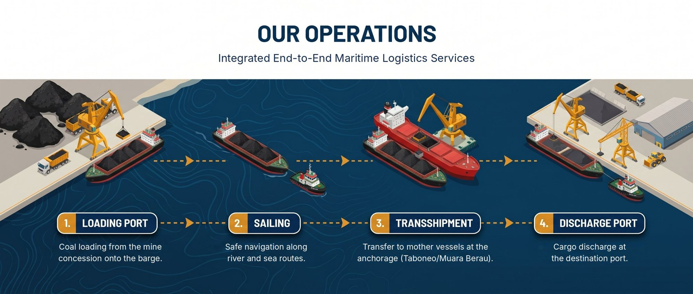
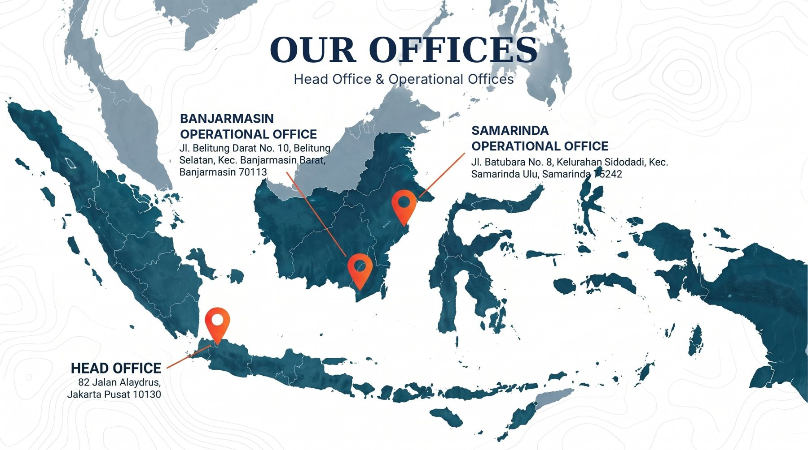
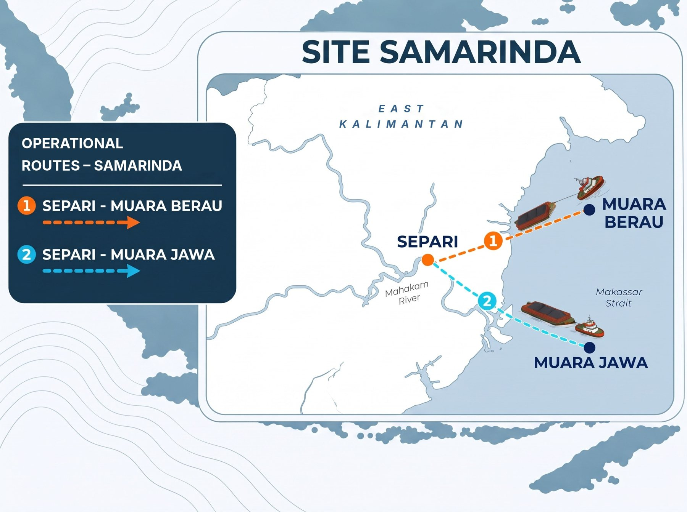
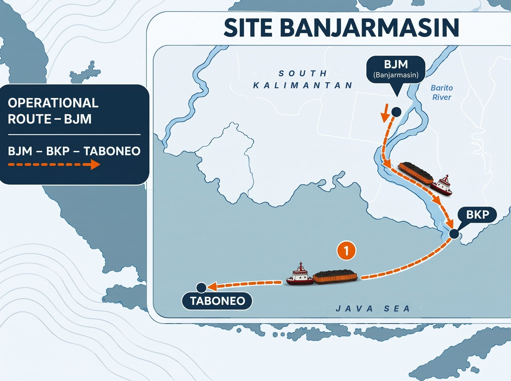

海上物流服务
凭借我们运营和管理的拖轮驳船船队，我们将散货从巴里托河和马哈坎河沿岸的装货点运往过驳点和目的港。
加里曼丹的大多数矿区没有可供大型船舶直接靠泊的深水港。这正是我们发挥作用的地方。我们的拖轮驳船船组弥补了这一缺口，将货物从河岸码头运送到海上的母船，使大量货物能够高效、经济地进入国内和出口市场。
航行区域： 南加里曼丹水域（巴里托河、塔博内奥）和东加里曼丹水域（马哈坎河、穆阿拉贝劳、穆阿拉爪哇）。

作业区域
雅加达总部负责商务和合同事务，装货作业则由两个现场办事处负责。



我们的船队
载货量按（GT × 2.4）+ 200 估算。实际载货量取决于货物种类、吃水和天气。
| 尺寸（长 × 宽 × 深） | 数量 | 总吨位 | 载货量（公吨） | 船级 |
|---|---|---|---|---|
| 300 × 80 × 18 ft | 55 | 3,113 – 3,145 | 7,671 – 7,748 | RINA |
| 270 × 80 × 16 ft | 10 | 2,404 | 5,970 | ClassNK |
| 270 × 70 × 16 ft | 5 | 2,102 – 2,148 | 5,245 – 5,355 | RINA |
| 280 × 75 × 17 ft | 2 | 2,505 – 2,512 | 6,212 – 6,229 | RINA |
| 类型 | 数量 | 尺寸（长 × 宽 × 深） | 总吨位 | 船级 |
|---|---|---|---|---|
| 28 米级 | 44 | 28.05 × 8.6 × 4.3 m | 249 – 256 | RINA |
| 26 米级 | 10 | 26.00 × 8.00 × 3.65 m | 197 | ClassNK |
| 28 – 29.5 米级 | 7 | 28.05 – 29.5 × 8.6 – 9.0 × 4.16 – 4.3 m | 225 – 259 | RINA, BKI |
| 其他 | 3 | 船长 23.52 – 29.2 米 | 175 – 241 | RINA, BKI |
GT（总吨位）是船舶全部封闭空间的容积，用于船舶登记、港口费用和入级。可根据要求提供船舶可用情况及单船规格。
货物种类
我们的驳船专为干散货设计。如货物需要特殊处理，请先提供详细信息，以便我们评估是否适合承运。
我们的主要货物，从巴里托河和马哈坎河航线运往过驳点。
散装矿石，以驳船从装货码头运往过驳点或目的港。
证书与文件
每艘船舶均持有有效证书并按期更新。如需尽职调查，可根据要求提供特定证书副本。